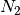
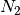

Instrument This selects the instrument used by the GUI.
Time Zero This is the time zero value used. By default the time zero is taken from the file but it can be specified here in which case the specified time zero is used for all calculations.
First Good Data This is the first good data value used. By default the first good data is taken from the file. However, the user can manually change the value. The specified first good data is used for all calculations.
Last Good Data This is the Last good data value used. By default the last good data is taken from the file. However, the user can manually set the value. The specified first good data is used for all calculations.
Deadtime The default is to use no deadtime correction. There are three deadtime correction options if required.
From data file: The deadtime table will be taken from the relevant data fileFrom table workspace: A previously loaded deadtime table may be selected which will then be used in all group and pair calculations.From other file: A file may be selected to load a deadtime table from this will then be used in all group and pair calculations.Double Pulse This controls whether todo a double pulse fit and if so what time offset to use. If checked then DoublePulseFit is run instead of Fit, when pressing the fit button. The PulseOffset parameter is the value entered here. The pulse weightings are set as

where  ,
,  is the time offset,
is the time offset,  is the posotive muon half life,
is the posotive muon half life,  is the first pulse weighting and  is the second pulse weighting.
is the first pulse weighting and  is the second pulse weighting.
Fixed Fixed rebinning allows a scale factor to be entered which will then be used to scale the raw bins.
Variable Variable binning allows a string to be entered which specifies the required binning. The string is of the format used by the Rebin algorithm.